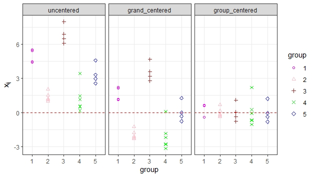
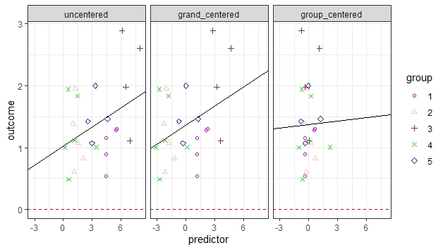

r2 <- c(0.12,0.18,0.17,0.21,0.23)
eatRep::pool.R2(r2)FAQ
FAQ
1. Wie poole ich mein \(R^2\) richtig über mehrere (bspw. 15) Imputationen?
a. Methode nach Harel (2009)
Die von Harel (2009) vorgeschlagene Methode beinhaltet mehrere Schritte:
1. Die Quadratwurzel aus \(R^2\) ziehen
2. eine Fisher z-Transformation durchführen, damit der Wertebereich auf alle reellen Zahlen ausgeweitet wird
3. Rubins Regeln für metrische Variablen anwenden
4. mit einer inversen z-Transformation den Wert wieder zurückrechnen und quadrieren
Harel, O. (2009). The estimation of R2 and adjusted R2 in incomplete data sets using multiple imputation. Journal of Applied Statistics, 36(10), 1109-1118.
b. pool.R2() aus eatRep
Im Paket eatRep kann das über die Funktion pool.R2() berechnet werden. Die Funktion wird momentan noch nicht auf den Namensraum (Namespace) des Pakets exportiert, was allerdings ab der nächsten Paketversion möglich sein wird.
Angenommen, aus einer Analyse multipel imputierter Daten resultieren 5 verschiedene (hier fiktive) \(R^2\)-Werte, dann kann der gepoolte \(R^2\)-Wert folgendermaßen bestimmt werden:
2. DIF-Richtung in Conquest/eatModel: Was bedeuten negative Werte in der “estDif”-Spalte?
In eatModel wird nur der erste Teil der zweiten Tabelle \(\text{item}\times\text{[DIFvariable]}\) aus Conquest übertragen. Das bedeutet, dass negative Werte in der eatModel-estDif-Spalte dafür stehen, dass die jeweiligen Items in der ersten Gruppe der \(\text{[DIFvariable]}\) leichter sind. Die erste Gruppe ist die mit dem numerisch kleineren Gruppenindikatorwert. Zur Illustration ein Beispiel, das Daten aus dem TAM-Paket verwendet:
library(kableExtra)
library(eatTools)
library(eatModel)
data(data.ex08, package="TAM")
# Gesamtdatensatz bauen, der sowohl Personen-ID, DIF-Variable als auch responses enthaelt
dat <- data.frame(id = 1:nrow(data.ex08[["resp"]]), female = unlist(data.ex08[["facets"]])-1, data.ex08[["resp"]])
def <- defineModel(dat, items= -c(1:2), id="id", DIF.var = "female", software="tam")14 subject(s) do not solve any item:
115 (10 false), 613 (10 false), 979 (10 false) ...
7 subject(s) solved each item: 119 (10 correct), 514 (10 correct), 774 (10 correct) ...
Dataset is completely linked.
'gauss' has been chosen for estimation method. Number of nodes was not explicitly specified. Set nodes to 20.
Q matrix specifies 1 dimension(s).run <- runModel(def)
res <- getResults(run, verbose=FALSE)
item <- itemFromRes(res)Das einzige Item mit B-DIF entsprechend der ETS-Kriterien ist Item Nummer 6:
item6 <- subset(roundDF(item,digits = 3), item == "I0006")
cols <- c("item", "itemP", "est", "estDif", "absDif", "difIndex", "ETS")
# ausgewaehlte Spalten fuer Items 6 anzeigen lassen
kbl(item6[,cols], row.names=FALSE) %>%
kable_styling(bootstrap_options = "striped", full_width = FALSE, position = "center")| item | itemP | est | estDif | absDif | difIndex | ETS |
|---|---|---|---|---|---|---|
| I0006 | 0.454 | 0.226 | 0.31 | 0.62 | 1 | B |
Die allgemeine Lösungshäufigkeit des Items ist 45.4 Prozent. Der positive DIF-Wert von 0.3098146 bedeutet, dass das Item in der ersten Gruppe (also female = 0, die Gruppe der Jungen) schwerer ist. Die Lösungshäufigkeit sollte also für female = 0 geringer sein, als für female = 1:
tapply(dat[,"I0006"], dat[,"female"], mean) 0 1
0.410 0.498 3. Zentrierung um den Gesamtmittelwert (Grand-Mean-Centering) oder um den Gruppenmittelwert (Group-Mean-Centering) und Bedeutung für Interaktionen in Mehrebenenmodellen
Wenn in Mehrebenenmodellen Interaktionen geschätzt werden, hängt die Schätzung des Intercepts wie auch die der Haupteffekte von der gewählten Skala der Prädiktoren ab. Die Haupteffekte repräsentieren den Effekt eines Prädiktors an der Stelle, an der die anderen Prädiktoren null sind. Da die Null oftmals kein natürlicher Wert von Prädiktoren ist (z. B. ist die Interpretation eines Effekts an der Stelle Klassengröße = 0 i. d. R. nicht sehr sinnvoll), wird das Zentrieren der Prädiktoren empfohlen. Hier kommen zwei Varianten in Frage: Zentrierung am Gruppenmittelwert und Zentrierung am Gesamtmittelwert. Für einen Prädiktor \(X\), der an Individuum \(i\) (\(\forall i \in \{1,…,i,…,n\}\)) in Gruppe \(j\) (\(\forall j \in \{1,…,j,…,J\}\)) erhoben wird, bedeutet eine Zentrierung am Gesamtmittelwert, dass man von diesem individuellen Wert \(x_{ij}\) den Gesamtmittelwert \(M_X\) abzieht, gemäß: \(X_{ij}-M_X\). Eine Zentrierung am Gruppenmittelwert bedeutet, dass man vom individuellen Wert \(x_{ij}\) den Mittelwert der jeweiligen Gruppe abzieht, gemäß: \(X_{ij}-M_{X_j}\) Hier eine grafische Darstellung dieser Zentrierungsmöglichkeiten eines Prädiktors:

Hier ist derselbe Prädiktor in seinen drei Zentrierungsformen in Relation zu einem Outcome abgebildet:

Wenn man nun eine einfache lineare Regression eines Outcomes auf den Prädiktor rechnet, kann man die Haupteffekte (Slopes) des unzentrierten Prädiktors und des Grand-Mean-zentrierten Prädiktors genau gleich interpretieren: Der Regressionskoeffizient beschreibt die Veränderung des Outcomes, wenn der Prädiktor um eine Einheit ansteigt. Dies gilt nicht für den Group-Mean-zentrierten Prädiktor: Dieser repräsentiert die erwartete Veränderung des Outcomes bei Zunahme des Prädiktors um eine durchschnittliche Einheit innerhalb der Gruppen.
a. Zentrierung um den Gruppenmittelwert: Schätzung von Individual- und Aggregateffekten unabhängig voneinander.
Die Zentrierung um den Gruppenmittelwert ermöglicht die Trennung der individuellen Variation innerhalb der Gruppen von der Variation zwischen den Gruppen. Dadurch können sowohl die Effekte auf der Individualebene als auch die Effekte auf der Gruppenebene unabhängig voneinander geschätzt werden.
- Interpretation von Level-1-Variablen-Interaktionen: Zeigt an, wie sich die lineare Beziehung zwischen Variablen innerhalb der Gruppen gestaltet.
- Interpretation von Level-2-Variablen-Interaktionen: Zeigt an, wie sich die lineare Beziehung der Variablen zwischen den Gruppen gestaltet – allerdings wird hier nicht voll kontrolliert für Level-1-Prädiktoren, sofern nicht zusätzlich noch die Gruppenmittelwerte der zu kontrollierenden Level-1-Variablen aufgenommen werden, sodass die Zentrierung um den Gruppenmittelwert für diesen Zweck von manchen Autor:innen als weniger sinnvoll erachtet wird (Algina & Swaminathan, 2011).
- Interpretation von Cross-Level-Interaktionen: Bei der Untersuchung von Interaktionen zeigt ein Interaktionseffekt zwischen einer um den Gruppenmittelwert zentrierten individuellen Variablen (Level-1) und einer gruppenbezogenen Variablen (Level-2), inwiefern der Effekt der individuellen Variablen von der gruppenbezogenen Variablen abhängt: Hat eine höhere Ausprägung auf einer Level-1-Variablen relativ zum Gruppenmittelwert auf dieser Variablen einen anderen Effekt auf das Kriterium, wenn die Ausprägung einer Level-2-Variablen für die Gruppe höher ist? Der Koeffizient sollte sich gemäß Algina und Swaminathan (2011) nicht bedeutsam unterscheiden von dem, der durch Zentrierung um den Gesamtmittelwert geschätzt wird, aber falls doch, empfehlen die Autoren, diese Cross-Level-Interaktion aus dem Modell zu entfernen. Andere Autor:innen empfehlen nur Group-Mean-Centering der Level-1- und Grand-Mean-Centering der Level-2-Prädiktoren bei Untersuchung von Cross-Level-Interaktionen, da so die Interpretation der Haupteffekte erleichtert wird (z.B. Bauer & Curran, 2005). Mehrere Autor:innen (z. B. Yaremych et al., 2023) plädieren bei Cross-Level-Interaktionen im Allgemeinen für diese Art der Zentrierung, da sie meistens den formulierten Cross-Level-Interaktions-Hypothesen entspricht.
b. Zentrierung um den Gesamtmittelwert: Führt zu einfacher Interpretation des Intercepts, aber auch zu “Overall-Regression”.
Die Zentrierung um den Gesamtmittelwert ermöglicht die Untersuchung der Effekte in Bezug auf den Mittelwert der gesamten Stichprobe. Das Intercept entspricht dem erwarteten Wert auf der Kriteriumsvariablen bei durchschnittlicher Ausprägung der Prädiktorvariablen. Die Effekte zwischen und innerhalb der Untersuchungseinheiten lassen sich nicht mehr getrennt interpretieren („Overall-Regression“).
- Interpretation von Level-1-Variablen-Interaktionen: Zeigt an, wie sich die lineare Beziehung der Variablen über alle Gruppen hinweg gestaltet.
- Interpretation von Level-2-Variablen-Interaktionen: Zeigt an, wie sich die lineare Beziehung der Variablen zwischen den Gruppen gestaltet (ggf. vollständig kontrolliert für Level-1-Prädiktoren). Diese Form der Zentrierung wird zu solchem Zweck meist empfohlen (Algina & Swaminathan, 2011).
- Interpretation von Cross-Level-Interaktionen: Bei der Untersuchung von Interaktionen zeigt ein Interaktionseffekt zwischen einer um den Gesamtmittelwert zentrierten individuellen Variablen (Level-1) und einer gruppenbezogenen Variablen (Level-2), wie der Effekt der individuellen Variablen über alle Gruppen hinweg von der gruppenbezogenen Variablen abhängt: Hat eine höhere absolute Ausprägung auf einer Level-1-Variablen einen anderen Effekt auf das Kriterium, wenn die Ausprägung einer Level-2-Variablen für die Gruppe höher ist? Algina und Swaminathan (2011) plädieren dafür, diese Cross-Level-Interaktion aus dem Modell zu entfernen, sollte sich der Effekt deutlich unterscheiden von der alternativen Schätzung nach Zentrierung um den Gruppenmittelwert.
c. Keine Zentrierung: Ist selten sinnvoll bei Interaktionen im Modell. Vor allem dann nicht, wenn die Null für die Prädiktorvariablen kein sinnvoller Wert ist.
Alle Empfehlungen gelten ebenso für kategoriale Prädiktoren, siehe z. B. Yaremych et al. (2023): “… we have demonstrated that centering guidelines for continuous predictors should be applied analogously to categorical predictors” (p. 8). Hierbei wird ein \(k-\)stufiger Prädiktor stets durch \(k-1\) “Coding-Variablen” repräsentiert. Ob diese durch Dummy-Kodierung, Effekt-Kodierung oder Kontrast-Kodierung gebildet werden, hängt von der intendierten Interpretation ab und liegt außerhalb des Fokus’ dieses Artikels.
Literatur
Algina, J., & Swaminathan, H. (2011). Centering in two-level nested designs. In J. Hox & K. Roberts (Eds.), The handbook of advanced multilevel data analysis (pp. 285–312). Routledge.
Bauer, D.J., & Curran, P.J. (2005). Probing interactions in fixed and multilevel regression: Inferential and graphical techniques. Multivariate Behavioral Research, 40, 373–400. https://doi.org/10.1207/s15327906mbr4003_5
Yaremych, H. E., Preacher, K. J., & Hedeker, D. (2023). Centering categorical predictors in multilevel models: Best practices and interpretation. Psychological Methods, 28(3), 613–630. https://doi.org/10.1037/met0000434
4. Wie groß sollte das N pro Item idealerweise sein?
Grundsätzlich stellt sich die Frage des N pro Item in erster Linie bei Pilotierungsstudien, wo die Inferenz auf der Itemebene (anstatt der Personenebene) stattfindet. Einen festen Grenzwert gibt es hier nicht, wobei größer natürlich immer besser ist. Es gibt jedoch Daumenregeln und es hängt von den Analysen ab, die mit den gewonnenen Daten unternommen werden sollen. Als Minimalwert kann man sich an \(N>100\) orientieren. Im Studiendesign versucht man dabei, auf ein \(N=150\) zuzusteuern, damit selbst trotz unvorhergesehener Ausfälle bspw. aufgrund von Krankheit Einzelner die 100 niemals unterschritten wird. Konkret können die praktisch notwendigen Stichprobenzahlen aber auch größer ausfallen, zum Beispiel:
- VERA-Pilotierung ohne DIF: hier wäre \(N=150\) ein vertretbarer Richtwert.
- VERA-Pilotierung mit DIF-Analyse bzgl. Geschlecht: für eine verlässliche DIF-Analyse wäre \(N=150\) pro Geschlechtergruppe anzustreben. Da Geschlecht einigermaßen gleichverteilt ist und erfahrungsgemäß nur wenige fehlende Werte aufweist, wäre hier \(N=300\) ein Minimum, \(N=400\) ein komfortabler Richtwert. So wird es auch in VERA häufig gehandhabt.
- Pilotierung mit DIF-Analyse bzgl. SPF: Das Besondere hierbei ist, dass die Gruppengrößen sehr ungleich verteilt sind. Für eine verlässliche DIF-Analyse wäre \(N=150\) in der kleinsten Gruppe anzustreben, was bzgl. SPF aber oft nicht möglich ist. In Bildungstrendstudien mit Gesamtstichprobengrößen \(N>20000\) ist das zwar möglich, aber in kleineren Erhebungen wie VERA-Pilotierungen wäre das komplett unrealistisch. Hier müsste man also ggf. ein Oversampling anstreben, also die anteilsmäßig kleine Gruppe durch zusätzliche Ziehungen “überrepräsentieren”.
- Analysen bzgl. Migrationshintergrund: Sollen in einer Erhebung bspw. Migrationshintergrund und Geschlecht erhoben werden, um etwa die Frage zu untersuchen, ob es Interaktionseffekte im Lernzuwachs von männlichen/weiblichen Personen mit oder ohne Migrationshintergrund gibt, handelt es sich nicht länger um eine Inferenz auf Item- sondern auf Personenebene. Nach dem N pro Item zu fragen, ergibt hier weniger Sinn. Eher wäre die Stichprobe so zu wählen, dass die Zellenbelegungen in der Kreuztabelle aus \(\text{Migrationshintergrund}\times \text{Geschlecht}\) hinreichend groß sind. Für eine solche Untersuchung müssten die verwendeten Items hinsichtlich ihrer Eignung bereits überprüft worden sein – es müsste also sichergestellt sein, dass sie kein DIF bezüglich Geschlecht oder Migrationshintergrund aufweisen.
Weitere Fragen und/oder deren Antworten können abgelegt und eingesehen werden unter: t:/SIG/SIG Methoden/Liste methodischer Fragen.docx